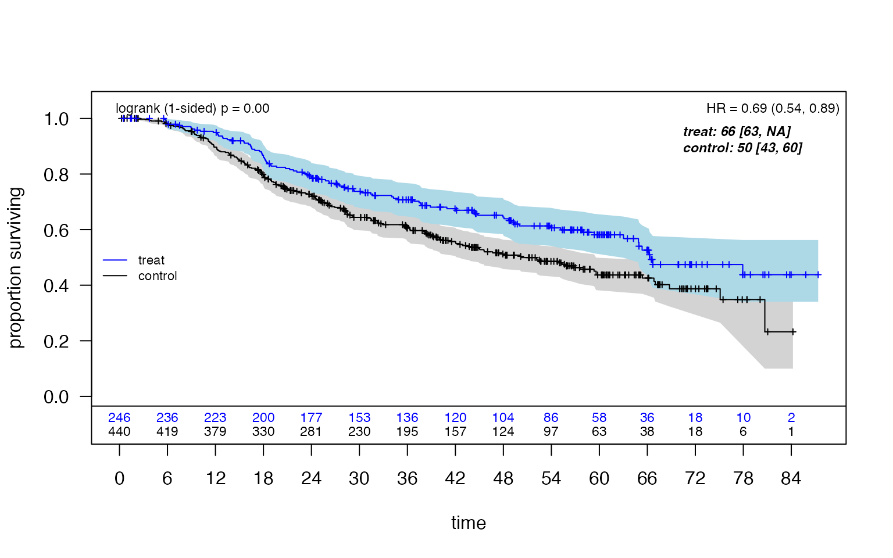
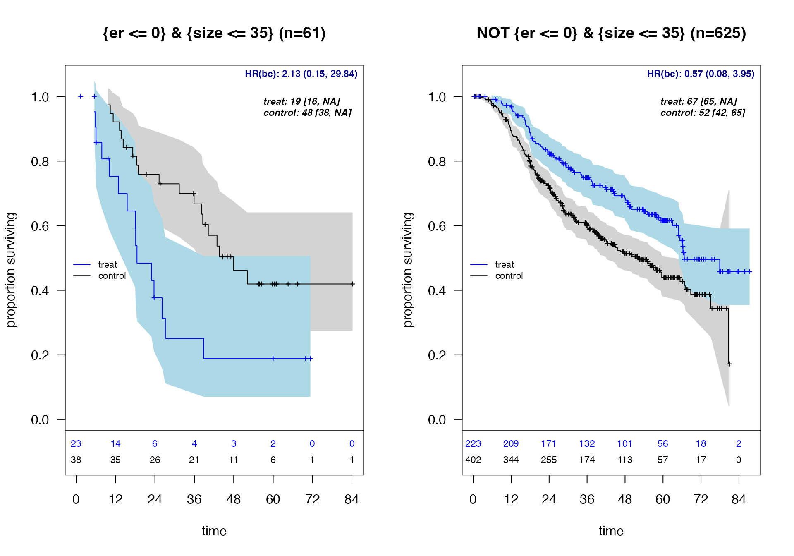
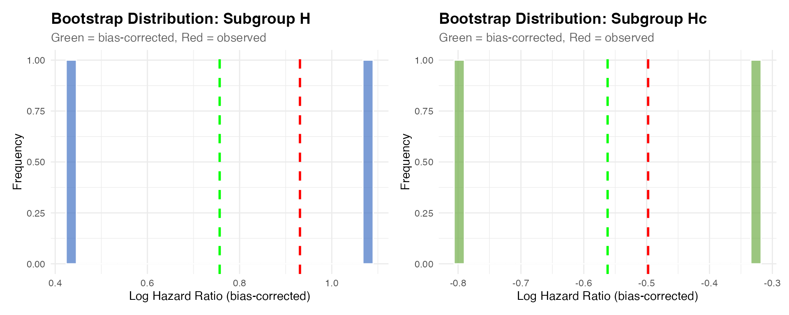
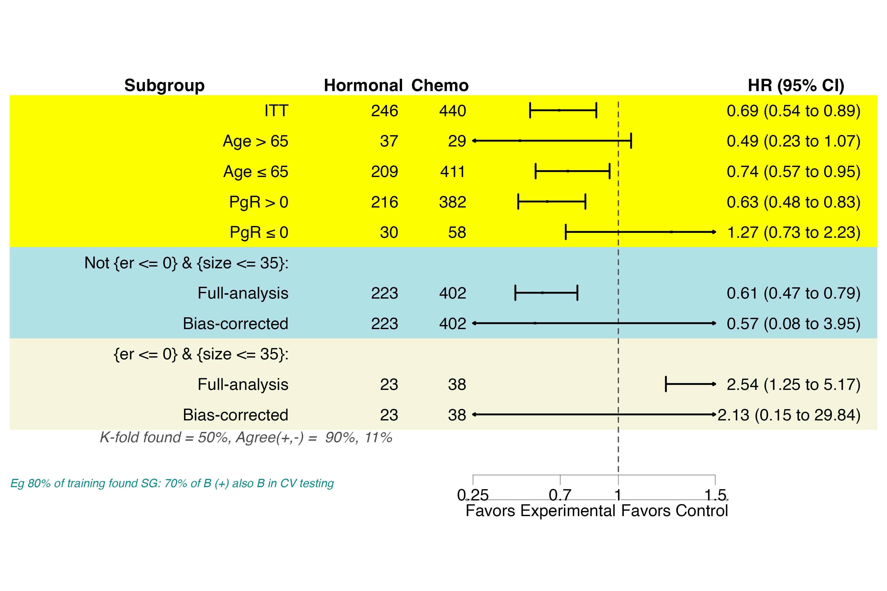
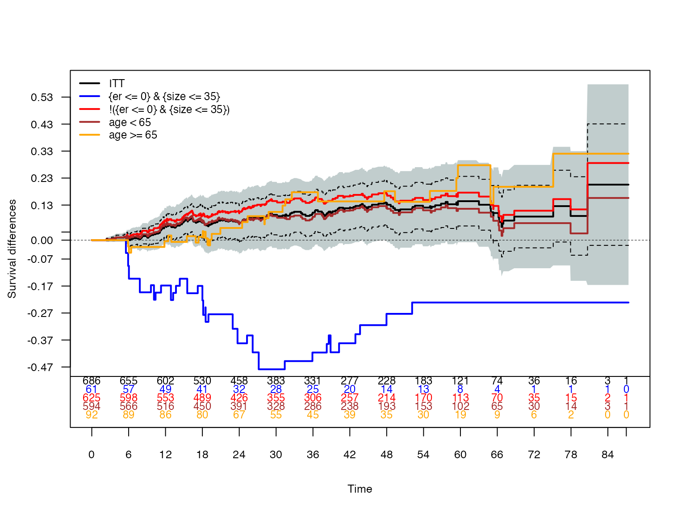

Exploratory Subgroup Identification with ForestSearch
German Breast Cancer Study Group (GBSG) Analysis
Larry F. León
2026-02-16
Source:vignettes/forestsearch.Rmd
forestsearch.RmdIntroduction
This vignette demonstrates the ForestSearch methodology for exploratory subgroup identification in survival analysis, as described in León et al. (2024) Statistics in Medicine.
Motivation
In clinical trials, particularly oncology, subgroup analyses are essential for:
- Evaluating treatment effect consistency across patient populations
- Identifying subgroups where treatment may be detrimental (harm)
- Characterizing subgroups with enhanced benefit
- Informing regulatory decisions and clinical practice
While prespecified subgroups provide stronger evidence, important subgroups based on patient characteristics may not be anticipated. ForestSearch provides a principled approach to exploratory subgroup identification with proper statistical inference.
Methodology Overview
ForestSearch identifies subgroups through:
- Candidate factor selection: Using LASSO and/or Generalized Random Forests (GRF)
-
Exhaustive subgroup search: Evaluating all
combinations up to
maxkfactors - Consistency-based selection: Applying splitting consistency criteria
- Bootstrap bias correction: Adjusting for selection-induced optimism
- Cross-validation: Assessing algorithm stability
The key innovation is the splitting consistency criterion: a subgroup is considered “consistent with harm” if, when randomly split 50/50 many times, both halves consistently show hazard ratios ≥ 1.0 (for example if 1.0 represents a meaningful “harm threshold”).
Setup
Load Required Packages
library(forestsearch)
library(survival)
library(data.table)
library(ggplot2)
library(gt)
library(grf)
library(policytree)
library(doFuture)
# Optional packages for enhanced output
library(patchwork)
library(weightedsurv)
# Set ggplot theme
theme_set(theme_minimal(base_size = 12))Data: German Breast Cancer Study Group Trial
Study Background
The GBSG trial evaluated hormonal treatment (tamoxifen) versus chemotherapy in node-positive breast cancer patients. Key characteristics:
- Sample size: N = 686
- Outcome: Recurrence-free survival time
- Censoring rate: ~56%
- Treatment: Hormonal therapy (tamoxifen) vs. chemotherapy
Data Preparation
# Load GBSG data (included in forestsearch package)
df.analysis <- gbsg
# Prepare analysis variables
df.analysis <- within(df.analysis, {
id <- seq_len(nrow(df.analysis))
time_months <- rfstime / 30.4375
grade3 <- ifelse(grade == "3", 1, 0)
treat <- hormon
})
# Define variable roles
confounders.name <- c("age", "meno", "size", "grade3", "nodes", "pgr", "er")
outcome.name <- "time_months"
event.name <- "status"
id.name <- "id"
treat.name <- "hormon"
# Display data structure
cat("Sample size:", nrow(df.analysis), "\n")## Sample size: 686
cat("Events:", sum(df.analysis[[event.name]]),
sprintf("(%.1f%%)\n", 100 * mean(df.analysis[[event.name]])))## Events: 299 (43.6%)## Baseline factors: age, meno, size, grade3, nodes, pgr, erBaseline Characteristics
create_summary_table(
data = df.analysis,
treat_var = treat.name,
table_title = "GBSG Baseline Characteristics by Treatment Arm",
vars_continuous = c("age", "nodes", "size", "er", "pgr"),
vars_categorical = c("grade", "meno"),
font_size = 12
)| GBSG Baseline Characteristics by Treatment Arm | |||||
| Characteristic | Control (n=440) | Treatment (n=246) | P-value1 | SMD2 | |
|---|---|---|---|---|---|
| age | Mean (SD) | 51.1 (10.0) | 56.6 (9.4) | <0.001 | 0.57 |
| nodes | Mean (SD) | 4.9 (5.6) | 5.1 (5.3) | 0.665 | 0.03 |
| size | Mean (SD) | 29.6 (14.4) | 28.8 (14.1) | 0.470 | 0.06 |
| er | Mean (SD) | 79.7 (124.2) | 125.8 (191.1) | <0.001 | 0.30 |
| pgr | Mean (SD) | 102.0 (170.0) | 124.3 (249.7) | 0.213 | 0.11 |
| grade | 0.273 | 0.06 | |||
| 1 | 48 (10.9%) | 33 (13.4%) | |||
| 2 | 281 (63.9%) | 163 (66.3%) | |||
| 3 | 111 (25.2%) | 50 (20.3%) | |||
| meno | <0.001 | 0.27 | |||
| 0 | 231 (52.5%) | 59 (24.0%) | |||
| 1 | 209 (47.5%) | 187 (76.0%) | |||
| 1 P-values: t-test for continuous, chi-square/Fisher's exact for categorical/binary variables | |||||
| 2 SMD = Standardized mean difference (Cohen's d for continuous, Cramer's V for categorical) | |||||
Kaplan-Meier Analysis (ITT Population)
# Prepare counting process data for KM plot
dfcount <- df_counting(
df = df.analysis,
by.risk = 6,
tte.name = outcome.name,
event.name = event.name,
treat.name = treat.name
)
# Plot with confidence intervals and log-rank test
plot_weighted_km(
dfcount,
conf.int = TRUE,
show.logrank = TRUE,
ymax = 1.05,
xmed.fraction = 0.775,
ymed.offset = 0.125
)
The ITT Cox hazard ratio estimate is approximately 0.69 (95% CI: 0.54, 0.89), suggesting an overall benefit for hormonal therapy.
Preliminary Analysis: Generalized Random Forests
Before running ForestSearch, we can use GRF to explore potential treatment effect heterogeneity and identify candidate factors.
t0 <- proc.time()
grf_est <- grf.subg.harm.survival(
data = df.analysis,
confounders.name = confounders.name,
outcome.name = outcome.name,
event.name = event.name,
id.name = id.name,
treat.name = treat.name,
maxdepth = 2,
n.min = 60,
dmin.grf = 12,
frac.tau = 0.6,
details = TRUE,
return_selected_cuts_only = FALSE
)## tau, maxdepth = 46.75811 2
## leaf.node control.mean control.size control.se depth
## 1 2 6.49 82.00 3.34 1
## 2 3 -4.10 604.00 1.06 1
## 11 4 -7.90 112.00 2.81 2
## 21 5 3.86 177.00 1.87 2
## 4 7 -5.89 356.00 1.33 2
##
## Selected subgroup:
## leaf.node control.mean control.size control.se depth
## 1 2 6.49 82.00 3.34 1
##
## GRF subgroup found
## Terminating node at max.diff (sg.harm.id):
## [1] "er <= 0"
##
## All splits (from all trees):
## [1] "er <= 0" "age <= 50" "age <= 43"
timings$grf <- (proc.time() - t0)["elapsed"]
# Display policy trees
# leaf1 = recommend control, leaf2 = recommend treatment
par(mfrow = c(1, 2))
plot(grf_est$tree1, leaf.labels = c("Control", "Treat"), main = "Depth 1")GRF identifies estrogen receptor status (ER) as a key factor, with ER ≤ 0 suggesting potential harm from hormonal therapy.
ForestSearch Analysis
Parallel Processing Configuration
ForestSearch supports parallel processing for computationally intensive operations (bootstrap, cross-validation).
# Detect available cores (limited to 2 cores for CRAN checks)
n_cores <- 2
n_cores_total <- parallel::detectCores()
cat("Using", n_cores, "of", n_cores_total, "total cores for parallel processing")## Using 2 of 14 total cores for parallel processingRunning ForestSearch
ForestSearch performs an exhaustive search over candidate subgroup
combinations with up to maxk factors. Key parameters:
| Parameter | Value | Description |
|---|---|---|
hr.threshold |
1.25 | Minimum HR for consistency evaluation |
hr.consistency |
1.0 | Minimum consistency rate for candidates |
pconsistency.threshold |
0.90 | Required consistency for selection |
maxk |
2 | Maximum factors in subgroup definition |
n.min |
60 | Minimum subgroup sample size |
d0.min, d1.min
|
12 | Minimum events per treatment arm |
t0 <- proc.time()
fs <- forestsearch(
df.analysis,
confounders.name = confounders.name,
outcome.name = outcome.name,
treat.name = treat.name,
event.name = event.name,
id.name = id.name,
# Threshold parameters (per León et al. 2024)
hr.threshold = 1.25,
hr.consistency = 1.0,
pconsistency.threshold = 0.80,
stop_threshold = 0.80,
# Search configuration
sg_focus = "hr",
max_subgroups_search = 3,
use_twostage = TRUE,
# Factor selection
use_grf = TRUE,
return_selected_cuts_only = TRUE,
use_lasso = TRUE,
cut_type = "default",
# Subgroup constraints
maxk = 2,
n.min = 60,
d0.min = 12,
d1.min = 12,
# Consistency evaluation
fs.splits = 100,
# Parallel processing
parallel_args = list(
plan = "multisession",
workers = n_cores,
show_message = TRUE
),
# Output options
showten_subgroups = TRUE,
details = TRUE,
plot.sg = TRUE
)##
## === Two-Stage Consistency Evaluation Enabled ===
## Stage 1 screening splits: 30
## Maximum total splits: 100
## Batch size: 20
## ================================================
##
## GRF stage for cut selection with dmin, tau = 12 0.6
## return_selected_cuts_only = TRUE: using cuts from selected tree only
## tau, maxdepth = 46.75811 2
## leaf.node control.mean control.size control.se depth
## 1 2 6.49 82.00 3.34 1
## 2 3 -4.10 604.00 1.06 1
## 11 4 -7.90 112.00 2.81 2
## 21 5 3.86 177.00 1.87 2
## 4 7 -5.89 356.00 1.33 2
##
## Selected subgroup:
## leaf.node control.mean control.size control.se depth
## 1 2 6.49 82.00 3.34 1
##
## GRF subgroup found
## Terminating node at max.diff (sg.harm.id):
## [1] "er <= 0"
##
## Cuts from selected tree (depth = 1 ):
## [1] "er <= 0"
## GRF cuts identified: 1
## Cuts: er <= 0
## Selected tree depth: 1
## # of continuous/categorical characteristics 5 2
## Continuous characteristics: age size nodes pgr er
## Categorical characteristics: meno grade3
## ## Prior to lasso: age size nodes pgr er
## #### Lasso selection results
## 7 x 1 sparse Matrix of class "dgCMatrix"
## s0
## age .
## meno .
## size 0.005433435
## grade3 0.178139021
## nodes 0.049670523
## pgr -0.001812895
## er .
## Cox-LASSO selected: size grade3 nodes pgr
## Cox-LASSO not selected: age meno er
## ### End Lasso selection
## ## After lasso: size nodes pgr
## Default cuts included from Lasso: size <= mean(size) size <= median(size) size <= qlow(size) size <= qhigh(size) nodes <= mean(nodes) nodes <= median(nodes) nodes <= qlow(nodes) nodes <= qhigh(nodes) pgr <= mean(pgr) pgr <= median(pgr) pgr <= qlow(pgr) pgr <= qhigh(pgr)
## Categorical after Lasso: grade3
## Factors per GRF: er <= 0
## Initial GRF cuts included er <= 0
## Factors included per GRF (not in lasso) er <= 0
##
## ===== CONSOLIDATED CUT EVALUATION (IMPROVED) =====
## Evaluating 14 cut expressions once and caching...
## Cut evaluation summary:
## Total cuts: 14
## Valid cuts: 14
## Errors: 0
## ✓ All 14 factors validated as 0/1
## ===== END CONSOLIDATED CUT EVALUATION =====
##
## # of candidate subgroup factors= 14
## [1] "er <= 0" "size <= 29.3" "size <= 25" "size <= 20" "size <= 35"
## [6] "nodes <= 5" "nodes <= 3" "nodes <= 1" "nodes <= 7" "pgr <= 110"
## [11] "pgr <= 32.5" "pgr <= 7" "pgr <= 131.8" "grade3"
## Number of possible configurations (<= maxk): maxk = 2 , # combinations = 406
## Events criteria: control >= 12 , treatment >= 12
## Sample size criteria: n >= 60
## Subgroup search completed in 0.01 minutes
##
## --- Filtering Summary ---
## Combinations evaluated: 406
## Passed variance check: 374
## Passed prevalence (>= 0.025 ): 374
## Passed redundancy check: 354
## Passed event counts (d0>= 12 , d1>= 12 ): 250
## Passed sample size (n>= 60 ): 247
## Cox model fit successfully: 247
## Passed HR threshold (>= 1.25 ): 7
## -------------------------
##
## Found 7 subgroup candidate(s)
## # of candidate subgroups (meeting all criteria) = 7
## Random seed set to: 8316951
## Two-stage parameters:
## n.splits.screen: 30
## screen.threshold: 0.617
## batch.size: 20
## conf.level: 0.95
## # of unique initial candidates: 7
## # Restricting to top stop_Kgroups = 3
## # of candidates to evaluate: 3
## # Early stop threshold: 0.8
##
## ================================================================================
## TOP 3 CANDIDATE SUBGROUPS FOR CONSISTENCY EVALUATION
## Sorted by: hr
## ================================================================================
##
## Rank HR N Events K Subgroup Definition
## --------------------------------------------------------------------------------
## 1 2.537 61 34 2 {er <= 0} & {size <= 35}
## 2 2.222 75 41 2 {er <= 0} & {pgr <= 32.5}
## 3 2.054 61 35 2 {er <= 0} & !{size <= 20}
## --------------------------------------------------------------------------------## Parallel config: workers = 2 , batch_size = 1
## Batch 1 / 3 : candidates 1 - 1
##
## ==================================================
## EARLY STOP TRIGGERED (batch 1 )
## Candidate: 1 of 3
## Pcons: 0.97 >= 0.8
## ==================================================
##
## Evaluated 1 of 3 candidates (early stop)
## 1 subgroups passed consistency threshold## *** Subgroup found: {er <= 0} {size <= 35}
## % consistency criteria met= 0.97
## SG focus = hr
## Seconds and minutes forestsearch overall = 1.997 0.0333
## Consistency algorithm used: twostage
plan("sequential")
timings$forestsearch <- (proc.time() - t0)["elapsed"]
cat("\nForestSearch completed in",
round(timings$forestsearch, 1), "seconds\n")##
## ForestSearch completed in 2 secondsForestSearch Results
Identified Subgroups
# Generate results tables
res_tabs <- sg_tables(fs, ndecimals = 3, which_df = "est")
# Display top subgroups meeting criteria
res_tabs$sg10_out| Identified Subgroups | ||||||
| Two-factor subgroups (maxk=2) | ||||||
| Factor 1 | Factor 2 | N | Events | E1 | HR | Pcons |
|---|---|---|---|---|---|---|
| {er <= 0} | {size <= 35} | 61 | 34 | 15 | 2.537 | 0.970 |
| Search Configuration: Single-factor candidates (L) = 28; Maximum combinations evaluated = 406; Search depth (maxk) = 2 | ||||||
| Search Results: Candidate subgroups found = 7; Maximum HR estimate = 2.54 | ||||||
| Note: E1 = events in treatment arm; Pcons = consistency proportion | ||||||
Treatment Effect Estimates
# ITT and subgroup estimates
res_tabs$tab_estimates| Treatment Effect Estimates | |||||||
| Training data estimates | |||||||
| Subgroup | n | n1 | events | m1 | m0 | RMST | HR (95% CI) |
|---|---|---|---|---|---|---|---|
| ITT | 686 (100.0%) | 246 (35.9%) | 299 (43.6%) | 66.3 | 50.2 | 7.8 | 0.69 (0.54, 0.89) |
| Questionable1 | 61 (8.9%) | 23 (37.7%) | 34 (55.7%) | 18.5 | 48 | -19 | 2.54 (1.25, 5.17) |
| Recommend | 625 (91.1%) | 223 (35.7%) | 265 (42.4%) | 66.7 | 52.2 | 9.6 | 0.61 (0.47, 0.79) |
| 1 Identified subgroup : {er <= 0} & {size <= 35} | |||||||
Identified Subgroup Definition
## Identified subgroup (H): {er <= 0} & {size <= 35}
cat("Subgroup size:", sum(fs$df.est$treat.recommend == 0),
sprintf("(%.1f%% of ITT)\n",
100 * mean(fs$df.est$treat.recommend == 0)))## Subgroup size: 61 (8.9% of ITT)ForestSearch identifies Estrogen ≤ 0 (ER-negative) as the subgroup with potential harm. This is biologically plausible: tamoxifen is a selective estrogen receptor modulator with limited efficacy in ER-negative tumors.
Bootstrap Bias Correction
Rationale
Cox model estimates from identified subgroups are upwardly biased due to the selection process (subgroups are selected because they show extreme effects). Bootstrap bias correction addresses this by:
- Resampling with replacement
- Re-running the entire ForestSearch algorithm
- Computing bias terms from bootstrap vs. observed estimates
- Applying infinitesimal jackknife variance estimation
Running Bootstrap Analysis
# Number of bootstrap iterations
# Use 500-2000 for production; reduced here for vignette
NB <- 2
t0 <- proc.time()
fs_bc <- forestsearch_bootstrap_dofuture(
fs.est = fs,
nb_boots = NB,
show_three = FALSE,
details = FALSE,
parallel_args = list(
plan = "multisession",
workers = n_cores,
show_message = TRUE
)
)
plan("sequential")
timings$bootstrap <- (proc.time() - t0)["elapsed"]
cat("\nBootstrap completed in",
round(timings$bootstrap / 60, 1), "minutes\n")##
## Bootstrap completed in 0.1 minutesBootstrap Summary and Diagnostics
# Comprehensive summary with diagnostics
summaries <- summarize_bootstrap_results(
sgharm = fs$sg.harm,
boot_results = fs_bc,
create_plots = TRUE,
est.scale = "hr"
)##
## ===============================================================
## BOOTSTRAP ANALYSIS SUMMARY
## ===============================================================
##
## IDENTIFIED SUBGROUP:
## -------------------------------------------------------------
## H: {er <= 0} & {size <= 35}
##
## BOOTSTRAP SUCCESS METRICS:
## -------------------------------------------------------------
## Total iterations: 2
## Successful subgroup ID: 2 (100.0%)
## Failed to find subgroup: 0 (0.0%)
##
## TIMING ANALYSIS:
## -------------------------------------------------------------
## Overall:
## Total bootstrap time: 0.04 minutes (0.00 hours)
## Average per iteration: 0.02 min (1.1 sec)
## Projected for 1000 boots: 18.92 min (0.32 hrs)
# Display bias-corrected estimates table
summaries$table| Treatment Effect by Subgroup | ||||||||
| Bootstrap bias-corrected estimates (2 iterations) | ||||||||
| Subgroup |
Sample Size
|
Survival
|
Treatment Effect
|
|||||
|---|---|---|---|---|---|---|---|---|
| N | NT | Events | MedT | MedC | RMSTd |
HR (95% CI)†1 |
HR‡ (95% CI)2 |
|
| Qstnbl3 | 61 (8.9%) | 23 (37.7%) | 34 (55.7%) | 18.5 | 48 | -19 | 2.54 (1.25, 5.17) | 2.13 (0.15,29.84) |
| Recmnd | 625 (91.1%) | 223 (35.7%) | 265 (42.4%) | 66.7 | 52.2 | 9.6 | 0.61 (0.47, 0.79) | 0.57 (0.08,3.95) |
| 1 Unadjusted HR: Standard Cox regression hazard ratio with robust standard errors | ||||||||
| 2 Bias-corrected HR: Bootstrap-adjusted estimate using infinitesimal jackknife method (2 iterations). Corrects for optimism in subgroup selection. | ||||||||
| 3 Identified subgroup: {er <= 0} & {size <= 35} | ||||||||
| Note: Med = Median survival time (months). RMSTd = Restricted mean survival time difference. Subgroup identified in 100.0% of bootstrap samples. | ||||||||
Kaplan-Meier by Identified Subgroups
km_result <- plot_sg_weighted_km(
fs.est = fs,
outcome.name = "time_months",
event.name = "status",
treat.name = "hormon",
show.logrank = FALSE,
conf.int = TRUE,
by.risk = 12,
show.cox = FALSE, show.cox.bc = TRUE,
fs_bc = fs_bc,
hr_bc_position = "topright"
)
Kaplan-Meier survival curves by identified subgroup
Note: Identified subgroup: {er <= 0} & {size <= 35}. HR(bc) = bootstrap bias-corrected hazard ratio. Medians [95% CI] for arms are un-adjusted.
Event Count Summary
Low event counts can lead to unstable HR estimates. This summary helps identify potential issues:
# note that default required minimum events is 12 for subgroup candidate
# Here we evaluate frequency of subgroup candidates in bootstrap samples less than 15
event_summary <- summarize_bootstrap_events(fs_bc, threshold = 15)##
## === Bootstrap Event Count Summary ===
## Total bootstrap iterations: 2
## Event threshold: <15 events
##
## ORIGINAL Subgroup H on BOOTSTRAP samples:
## Control arm <15 events: 0 (0.0%)
## Treatment arm <15 events: 0 (0.0%)
## Either arm <15 events: 0 (0.0%)
##
## ORIGINAL Subgroup Hc on BOOTSTRAP samples:
## Control arm <15 events: 0 (0.0%)
## Treatment arm <15 events: 0 (0.0%)
## Either arm <15 events: 0 (0.0%)
##
## NEW Subgroups found: 2 (100.0%)
##
## NEW Subgroup H* on ORIGINAL data:
## Control arm <15 events: 1 (50.0% of successful)
## Treatment arm <15 events: 1 (50.0% of successful)
## Either arm <15 events: 1 (50.0% of successful)
##
## NEW Subgroup Hc* on ORIGINAL data:
## Control arm <15 events: 0 (0.0% of successful)
## Treatment arm <15 events: 0 (0.0% of successful)
## Either arm <15 events: 0 (0.0% of successful)Bootstrap Diagnostics
# Quality metrics
summaries$diagnostics_table_gt| Bootstrap Diagnostics Summary | ||
| Analysis of 2 bootstrap iterations | ||
| Category | Metric | Value |
|---|---|---|
| Success Rate | Total iterations | 2 |
| Successful | 2 (100.0%) | |
| Failed | 0 (0.0%) | |
| Success rating | Excellent | |
| Subgroup H (Questionable) | Observed HR | 2.537 |
| Bias-corrected HR | 2.131 | |
| Bootstrap CV (%) | 60.2% | |
| N estimates | 2 | |
| Subgroup Hc (Recommend) | Observed HR | 0.608 |
| Bias-corrected HR | 0.570 | |
| Bootstrap CV (%) | 59.4% | |
| N estimates | 2 | |
Subgroup Agreement
How consistently does bootstrap identify the same subgroup?
# Agreement with original analysis
if (!is.null(summaries$subgroup_summary$original_agreement)) {
summaries$subgroup_summary$original_agreement
}## Metric Value
## <char> <char>
## 1: Total bootstrap iterations 2
## 2: Successful iterations 2
## 3: Failed iterations (no subgroup) 0
## 4:
## 5: Original subgroup definition {er <= 0} & {size <= 35}
## 6: Exact match with original 0 (0.0%)
## 7: Different from original 2 (100.0%)
## 8: Partial match (shared factor) 0 (0.0%)
# Factor presence across bootstrap iterations
if (!is.null(summaries$subgroup_summary$factor_presence)) {
summaries$subgroup_summary$factor_presence
}## Rank Factor Count Percent
## 1 1 age 1 50
## 2 2 grade3 1 50
## 3 3 pgr 1 50
## 4 4 size 1 50Bootstrap Distributions
if (!is.null(summaries$plots)) {
summaries$plots$H_distribution + summaries$plots$Hc_distribution
}
Cross-Validation
Cross-validation assesses the stability of the ForestSearch algorithm. Two approaches are available:
K-Fold Cross-Validation
# 10-fold CV with multiple iterations
# Use Ksims >= 50 for production
Ksims <- 1
t0 <- proc.time()
fs_kfold <- forestsearch_tenfold(
fs.est = fs,
sims = Ksims,
Kfolds = 2,
details = FALSE,
parallel_args = list(
plan = "multisession",
workers = n_cores,
show_message = FALSE
)
)
plan("sequential")
timings$kfold <- (proc.time() - t0)["elapsed"]
metrics_tables <- cv_metrics_tables(fs_kfold)
metrics_tables| Cross-Validation Metrics | ||
| Subgroup: Identified Subgroup | ||
| Metric | Description | Value (%) |
|---|---|---|
| Agreement | ||
| Sensitivity (H) | Agreement rate for subgroup H | 11.5 |
| Sensitivity (Hc) | Agreement rate for complement Hc | 89.8 |
| PPV (H) | Positive predictive value for H | 9.9 |
| PPV (Hc) | Positive predictive value for Hc | 91.2 |
| Subgroup Finding | ||
| Any Found | Any subgroup identified | 50.0 |
| Exact Match | Exact match on all factors | 0.0 |
| At Least 1 | At least one factor matches | 50.0 |
| Cov1 Any | First covariate found (any cut) | 0.0 |
| Cov2 Any | Second covariate found (any cut) | 50.0 |
| Cov1 & Cov2 | Both covariates found | 0.0 |
| Cov1 Exact | First covariate exact match | 0.0 |
| Cov2 Exact | Second covariate exact match | 50.0 |
| Based on 1 simulation(s) with 2-fold CV. Values are proportions shown as percentages. | ||
Out-of-Bag (N-Fold) Cross-Validation
N-fold CV (leave-one-out):
t0 <- proc.time()
fs_OOB <- forestsearch_Kfold(
fs.est = fs,
details = FALSE,
Kfolds = round(nrow(df.analysis)/100,0), # N-fold = leave-one-out
parallel_args = list(
plan = "multisession",
workers = n_cores,
show_message = TRUE
)
)
plan("sequential")
timings$oob <- (proc.time() - t0)["elapsed"]
# Summarize OOB results
cv_out <- forestsearch_KfoldOut(
res = fs_OOB,
details = FALSE,
outall = TRUE
)
tables <- cv_summary_tables(cv_out)
tables$combined_table
tables$metrics_tableResults Visualization
Forest Plot
The forest plot summarizes treatment effects across the ITT population, reference subgroups, and identified subgroups with cross-validation metrics.
# Define reference subgroups for comparison
subgroups <- list(
age_gt65 = list(
subset_expr = "age > 65",
name = "Age > 65",
type = "reference"
),
age_le65 = list(
subset_expr = "age <= 65",
name = "Age ≤ 65",
type = "reference"
),
pgr_positive = list(
subset_expr = "pgr > 0",
name = "PgR > 0",
type = "reference"
),
pgr_negative = list(
subset_expr = "pgr <= 0",
name = "PgR ≤ 0",
type = "reference"
)
)
my_theme <- create_forest_theme(base_size = 24,
footnote_fontsize = 17, cv_fontsize = 22)
# Create forest plot
# Include fs_kfold and fs_OOB if available for CV metrics
result <- plot_subgroup_results_forestplot(
fs_results = list(
fs.est = fs,
fs_bc = fs_bc,
fs_OOB = NULL,
fs_kfold = fs_kfold
),
df_analysis = df.analysis,
subgroup_list = subgroups,
outcome.name = outcome.name,
event.name = event.name,
treat.name = treat.name,
E.name = "Hormonal",
C.name = "Chemo",
ci_column_spaces = 25,
xlog = TRUE,
theme = my_theme
)
# Option 2: Custom sizing
render_forestplot(result) 
Subgroup forest plot including identified subgroups
KM Difference plots: ITT and subgroups
The solid black line denotes the ITT Kaplan-Meier treatment difference estimates along with 95%95% CIs (the grey shaded region). K-M differences corresponding to subgroups are displayed.
# Add additional subgroups along with ITT and identified subgroups
ref_sgs <- list(
age_young = list(subset_expr = "age < 65", color = "brown"),
age_old = list(subset_expr = "age >= 65", color = "orange")
)
plot_km_band_forestsearch(
df = df.analysis,
fs.est = fs,
ref_subgroups = ref_sgs,
outcome.name = outcome.name,
event.name = event.name,
treat.name = treat.name,
draws_band = 20
)
# # Example with more subgroups
# ref_sgs <- list(
# pgr_positive = list(subset_expr = "pgr > 0", color ="green"),
# pgr_negative = list(subset_expr = "pgr <= 0", color = "purple"),
# age_young = list(subset_expr = "age < 65", color = "brown"),
# age_old = list(subset_expr = "age >= 65", color = "orange")
# )Summary and Interpretation
Key Findings
## ============================================================
cat("FORESTSEARCH ANALYSIS SUMMARY\n")## FORESTSEARCH ANALYSIS SUMMARY## ============================================================## Dataset: GBSG (N = 686 )
cat("Outcome: Recurrence-free survival\n\n")## Outcome: Recurrence-free survival
cat("ITT Analysis:\n")## ITT Analysis:
cat(" HR (95% CI): 0.69 (0.54, 0.89)\n\n")## HR (95% CI): 0.69 (0.54, 0.89)
cat("Identified Subgroup (H):\n")## Identified Subgroup (H):## Definition: {er <= 0} & {size <= 35}
cat(" Size:", sum(fs$df.est$treat.recommend == 0),
sprintf("(%.1f%%)\n", 100 * mean(fs$df.est$treat.recommend == 0)))## Size: 61 (8.9%)## Unadjusted HR: 12.64
cat("\nComplement Subgroup (Hc):\n")##
## Complement Subgroup (Hc):
cat(" Size:", sum(fs$df.est$treat.recommend == 1),
sprintf("(%.1f%%)\n", 100 * mean(fs$df.est$treat.recommend == 1)))## Size: 625 (91.1%)Clinical Interpretation
The ForestSearch analysis identifies estrogen receptor-negative (ER ≤ 0) patients as a subgroup with potential lack of benefit from hormonal therapy.
Biological plausibility: Tamoxifen is a selective estrogen receptor modulator. Its efficacy depends on ER expression. The finding that ER-negative patients may not benefit is consistent with:
- Mechanistic understanding of tamoxifen action
- Meta-analyses showing no tamoxifen benefit in ER-negative breast cancer
- Clinical guidelines recommending tamoxifen primarily for ER-positive tumors
Caveats:
- This is an exploratory analysis requiring independent validation
- The bias-corrected estimates have wider confidence intervals
- Cross-validation metrics should be evaluated for algorithm stability
Computational Timing
| Computational Timing | ||
| Component | Time (sec) | Time (min) |
|---|---|---|
| GRF | 0.1 | 0.0 |
| ForestSearch | 2.0 | 0.0 |
| Bootstrap | 3.2 | 0.1 |
| Total | 10.0 | 0.2 |
timings$total <- (proc.time() - t_vignette_start)["elapsed"]
timing_df <- data.frame(
Analysis = c("GRF", "ForestSearch", "Bootstrap", "Total"),
Seconds = c(
timings$grf,
timings$forestsearch,
timings$bootstrap,
timings$total
)
)
timing_df$Minutes <- timing_df$Seconds / 60
gt(timing_df) |>
tab_header(title = "Computational Timing") |>
fmt_number(columns = c(Seconds, Minutes), decimals = 1) |>
cols_label(
Analysis = "Component",
Seconds = "Time (sec)",
Minutes = "Time (min)"
)References
León LF, Jemielita T, Guo Z, Marceau West R, Anderson KM (2024). “Exploratory subgroup identification in the heterogeneous Cox model: A relatively simple procedure.” Statistics in Medicine. DOI: 10.1002/sim.10163
Session Information
## R version 4.5.1 (2025-06-13)
## Platform: aarch64-apple-darwin20
## Running under: macOS Tahoe 26.3
##
## Matrix products: default
## BLAS: /Library/Frameworks/R.framework/Versions/4.5-arm64/Resources/lib/libRblas.0.dylib
## LAPACK: /Library/Frameworks/R.framework/Versions/4.5-arm64/Resources/lib/libRlapack.dylib; LAPACK version 3.12.1
##
## locale:
## [1] en_US.UTF-8/en_US.UTF-8/en_US.UTF-8/C/en_US.UTF-8/en_US.UTF-8
##
## time zone: America/Los_Angeles
## tzcode source: internal
##
## attached base packages:
## [1] stats graphics grDevices utils datasets methods base
##
## other attached packages:
## [1] weightedsurv_0.1.0 patchwork_1.3.2 doFuture_1.2.0
## [4] future_1.69.0 foreach_1.5.2 policytree_1.2.3
## [7] grf_2.5.0 gt_1.3.0 ggplot2_4.0.2
## [10] data.table_1.18.2.1 survival_3.8-6 forestsearch_0.1.0
##
## loaded via a namespace (and not attached):
## [1] gtable_0.3.6 shape_1.4.6.1 xfun_0.56
## [4] bslib_0.10.0 htmlwidgets_1.6.4 visNetwork_2.1.4
## [7] lattice_0.22-9 vctrs_0.7.1 tools_4.5.1
## [10] generics_0.1.4 parallel_4.5.1 tibble_3.3.1
## [13] pkgconfig_2.0.3 Matrix_1.7-4 forestploter_1.1.3
## [16] RColorBrewer_1.1-3 S7_0.2.1 desc_1.4.3
## [19] lifecycle_1.0.5 compiler_4.5.1 farver_2.1.2
## [22] stringr_1.6.0 textshaping_1.0.4 codetools_0.2-20
## [25] litedown_0.9 htmltools_0.5.9 sass_0.4.10
## [28] yaml_2.3.12 glmnet_4.1-10 pillar_1.11.1
## [31] pkgdown_2.2.0 jquerylib_0.1.4 cachem_1.1.0
## [34] iterators_1.0.14 parallelly_1.46.1 commonmark_2.0.0
## [37] tidyselect_1.2.1 digest_0.6.39 stringi_1.8.7
## [40] dplyr_1.2.0 listenv_0.10.0 labeling_0.4.3
## [43] splines_4.5.1 fastmap_1.2.0 grid_4.5.1
## [46] cli_3.6.5 magrittr_2.0.4 DiagrammeR_1.0.11
## [49] randomForest_4.7-1.2 future.apply_1.20.1 withr_3.0.2
## [52] scales_1.4.0 rmarkdown_2.30 globals_0.19.0
## [55] otel_0.2.0 gridExtra_2.3 progressr_0.18.0
## [58] ragg_1.5.0 evaluate_1.0.5 knitr_1.51
## [61] markdown_2.0 rlang_1.1.7 Rcpp_1.1.1
## [64] glue_1.8.0 xml2_1.5.2 rstudioapi_0.18.0
## [67] jsonlite_2.0.0 R6_2.6.1 systemfonts_1.3.1
## [70] fs_1.6.6